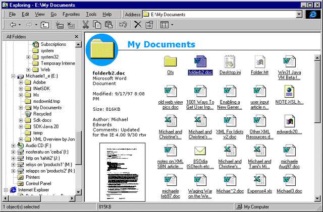
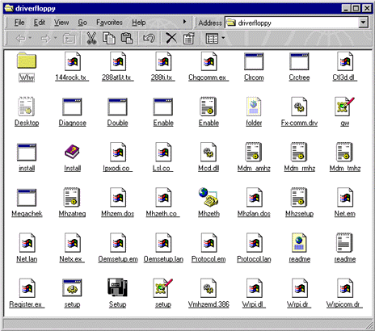
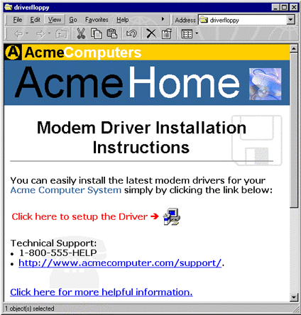
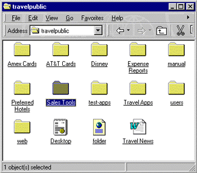
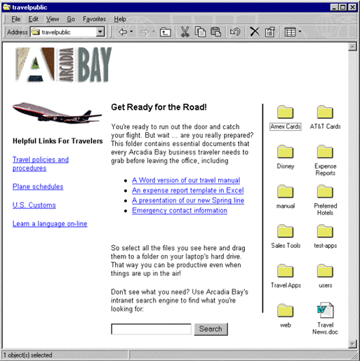
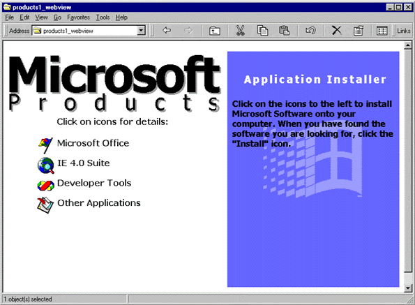

|
| ||
|
| ||
Michael Edwards
Developer Technology Engineer
Microsoft Corporation
Updated: September 30, 1997
Contents
Introduction
So How Does This Stuff Work?
How Can Web View Make Using Computers Easier?
Installation Disks and Folders
Making Your Web View the Default
Installation from the Web
Sharing Files and Folders on Your LAN
Sharing Files and Folders on Your LAN (by Hiding Them!)
Web View on the Desktop
Summary

Figure 1. Default Web View for My Documents folder
At first, I thought it was kind of lame. Then I played around a bit and noticed the thumbnail sketches of files displayed in the left panel. So I started looking at the script that creates the left panel and started thinking about what you might be able to do with a Web View.
I've come to believe that viewing a folder in a Web page is pretty cool because it offers a slick solution to problems I encounter frequently. For example, how many times have you opened a file just for a quick glance at the first page because you couldn't remember what it contained? Just as the Web has made viewing information easier and more fun, a Web View can shed some light on the darkness of a plain old list of files.
First, for the gear-heads, I'll talk a little bit about the underlying technology. Then I'll cut to the quick and take a look at a few problems that are "made" for Web View. Feel a strong urge to know how stuff works? Yep, you're a gear-head. It's OK, some of my best friends are, too. Don't have time to care how this stuff works? It's OK, you're probably more productive than the rest of us -- just skip the next section and go straight to the examples!
For advanced users (like you) who are not satisfied with boring old defaults, the shell team also added a Web View wizard that is launched by the new Customize This Folder… option in the Explorer's View menu. When the user completes the wizard, two new files are created in the target folder: desktop.ini and folder.htt.
The first file, desktop.ini, looks like this:
[ExtShellFolderViews]
Default={5984FFE0-28D4-11CF-AE66-08002B2E1262}
{5984FFE0-28D4-11CF-AE66-08002B2E1262}={5984FFE0-28D4-11CF-AE66-08002B2E1262}
[{5984FFE0-28D4-11CF-AE66-08002B2E1262}]
PersistMoniker=file://folder.htt
The shell reads desktop.ini and (to make a long story short) all those GUIDs above tell the shell to host the MSHTML.DLL component of Internet Explorer 4.0. Most applications that need a control to parse and render HTML will find it easier to use the WebBrowser control, because WebBrowser provides additional features (such as navigation and hyperlinking) not supported by MSHTML.
The Web View wizard also automatically creates a second file called folder.htt: This is the same file referenced in the PersistMoniker=file://folder.htt desktop.ini setting above. To create folder.htt the Web View wizard launches your HTML editor with the windows\web\folder.htt template. If you save the default HTML provided by the wizard, you end up with this (ignoring the Dynamic HTML and JScript for now):
<object id="FileList" border=0 tabindex=1 classid="clsid:1820FED0-473E-11D0-A96C-00C04FD705A2" style="position: absolute; left: 30%; top: 88px; width: 70%; height: 100%"> </object>
This <OBJECT> tag references a Shell Object (called the WebViewFolderContents object) that wraps the shell code for displaying files and folders. In fact, Internet Explorer 4.0 introduces several new Shell Objects that can be used from script by Web pages hosted in the Windows shell.
The main item of interest for Web developers who wish to provide their own customized Web View folders is the PersistMoniker=file://folder.htt line in desktop.ini. This setting specifies the HTML file to be passed to the WebBrowser control for displaying in the target folder. You can edit this desktop.ini setting to reference your own, custom HTML file. You may discover that you can point to a page on your intranet or the Internet (by changing file:// to http://), but this is not a supported feature in the final release of Internet Explorer 4.0. Of course, you pranksters out there are gleefully imagining cheap tricks you can pull on your friends with that little tidbit of information!
There are so many things that we accept as broken. We think they will always be broken, and we learn to work around them as best we can. But then somebody comes along with an easy, beautiful solution, and you just want to hug them. Or kick them for not coming up with it sooner. Or kick yourself for not thinking of it on your own. The people at Microsoft who love to solve user problems with Internet Explorer 4.0 came up with the four examples I've described below. All four illustrate common problems that can go away tomorrow -- with a Web View folder and Internet Explorer 4.0.
How many times have you plugged in an installation disk for a piece of software (for example, a driver) and stared at a seemingly random list of files, wondering what to do? Hmmm, should you run the setup.exe program? Or maybe you should install one of those random.inf files? How about opening the readme.txt file? And what about those subfolders, should you look in those? No, wait, you'd better open up that IfYouDontReadThisFirstYouWillRegretIt.doc! I can joke about this now, because I just finished reconfiguring my home computer after having it totally munched by a bad installation program a few months ago. Needless to say, I was pretty upset by the experience.
The autorun feature of CD-ROMs is becoming more common, and has really improved the installation experience for many users. (With autorun, when the user loads a CD into the CD-ROM drive, the system automatically runs a file on the CD, as specified in an autorun.inf file in the CD's root directory.) However, software that is distributed via floppy disk can benefit from a Web View of the root directory. In fact, you may have noticed that vendors have recently begun augmenting their old-fashioned readme.txt files with readme.htm files. This is a big step towards the idea of a Web View folder integrating an HTML view into the default viewing modes in Windows. In fact, if you are one of these vendors, you might be very interested in learning how to enable a Web View of your installation folder.
Take a look at this example of an installation folder on some poor developer's machine. (Note that in this example we've abandoned the Explorer in favor of a shell window that doesn't have a tree pane -- see Making Your Web View the Default for an explanation.)

Figure 2. Installation folder in standard view
This folder has it all -- multiple readme files, both batch and executable setup images, an installation utility, and loads of .INF and .INI files. What's the poor end-user to do? Groan most likely. Trash their computer, possibly. Now take a look at the same folder with Web View enabled:

Figure 3. Installation folder with Web View
Pretty slick, eh? And, the best part about this is that it uses plain old HTML! Oh, you could get fancier if you'd like -- throw in a component or maybe some flashy Dynamic HTML. Yes, your customers will thank you for an option to view the information they need in an HTML file instead of displaying a cryptic list of files and folders.
You need to provide only two simple files to create a custom Web View for your folder -- the rest is built right into Internet Explorer 4.0. One of the two files contains your very own HTML to be displayed when the user navigates to your folder. To create the second file, simply turn on Web View for any random folder on your computer (choose Customize This Folder… from the Explorer's View menu). When you do this, the Explorer will create a new file called desktop.ini in that folder. Just copy desktop.ini, along with your custom HTML file, into the folder you want to display in Web View mode by default. (On a floppy disk, these files should be located at the disk's root.) After copying the desktop.ini file, edit it and change the PersistMoniker setting to name your own, custom HTML file:
PersistMoniker=file://A:\foobar.htm
Of course the user can turn Web View on or off manually. However, if you want to make things as painless as possible for your customers, you want Web View to be turned on the first time they view your installation folder. Likewise, if you distribute your program on floppy disk or your stuff is downloaded to a floppy disk (for example, in a BIOS update or driver installation), you want your customers to see your Web View the first time they look at the contents of the disk.
The problem is that like the Large Icons, Small Icons, List, and Details view modes that you are already familiar with in Windows 95, Web View mode is global to a given instance of the Explorer. Thus, if the user has not already done so, they will have to specifically turn on Web View for your folder (by selecting the as Web Page option in the View menu).
Your best bet (other than telling the user to turn on Web View) is to display your folder using a shell window. The shell window view of a folder is displayed without the Explorer's tree pane and retains its state across sessions. You get this view when you enter a pathname in the Start menu's Run dialog, or you open My Computer on the desktop. You also get a shell window when you open folders (or shortcuts to folders) on your desktop, and when you choose Open after right-clicking the Start menu.
So all you have to do to make Web View the default is to provide the user with a shortcut to your folder that you last closed with Web View turned on. If you are shipping on a floppy, you could put the shortcut on your disk and tell the user to start the setup process by typing "A:\shortcut-name in the Run dialog of the Start menu. If you are downloading to a local folder, you could put a shortcut on the user's desktop, and open it for them the first time. Note that users can still turn off your Web View later, but that is their prerogative.
Many different solutions are available for installing code from a Web site, not all of which actually require you to create a new folder on the user's computer. If so, you won't need a Web View because the HTML on your Web site can get the job done.
As an example of how Web View can improve usability, check out this share point on a fictional company's local area network. At first look, it's a seemingly random collection of files and folders:

Figure 4. Standard LAN directory listing
With Web View, the listing turns into the Arcadia Bay travel page:

Figure 5. LAN directory listing with Web View
This example is a little more complicated than the last one, but it's still nothing a decent HTML coder can't handle. The two main components of interest here are Search functionality and the Files and Folders view. Microsoft Index Server  can help you add indexing and searching functionality, and Internet Explorer 4.0 includes a new Web View scripting object (named WebViewFolderContents) that you can use to view files and folders in your custom Web View. Remember Figure 1, where I showed you the Explorer's default Web View for the My Documents folder? That functionality doesn't look so lame now, does it? To put the WebViewFolderContents control in your custom Web View, turn on Web View in one of your folders and copy the <OBJECT> tag from the folder.htt file created in that directory:
can help you add indexing and searching functionality, and Internet Explorer 4.0 includes a new Web View scripting object (named WebViewFolderContents) that you can use to view files and folders in your custom Web View. Remember Figure 1, where I showed you the Explorer's default Web View for the My Documents folder? That functionality doesn't look so lame now, does it? To put the WebViewFolderContents control in your custom Web View, turn on Web View in one of your folders and copy the <OBJECT> tag from the folder.htt file created in that directory:
<object classid="clsid:1820FED0-473E-11D0-A96C-00C04FD705A2"> </object>
If you want to have a little more control over where the files and folders are displayed, you can use the new positioning functionality now available in CSS (as part of the HTML 3.2 spec  ) to position the object exactly where you want it:
) to position the object exactly where you want it:
<object
{position:absolute left=100 width=300 top=100 height=600}
classid="clsid:1820FED0-473E-11D0-A96C-00C04FD705A2">
</object>
If you look at the rest of the HTML in folder.htt, you will notice the JScript that provides information on a selected file or folder. (You'll also notice that the actual code for the <OBJECT> tag includes an ID attribute named FileList that is included in the JScript reference  .) This script uses the WebViewFolderContents object to provide the user with file name, type, size, and last-modified-date information. The script is invoked by a selection event when one of the icons is selected.
.) This script uses the WebViewFolderContents object to provide the user with file name, type, size, and last-modified-date information. The script is invoked by a selection event when one of the icons is selected.
Did you notice that the default Web View includes a thumbnail sketch of the currently selected file? If you dig further into folder.htt, you will notice that this is done by inserting the thumbnail viewer object (which is built into Internet Explorer 4.0) into the left information panel. You might want to steal that code for your own views that contain files and folders. Or, if you like the default Web View, you might just want to add more things to the left information pane instead of completely replacing folder.htt. The shell team anticipated this by making the code in folder.htt very readable and well commented (including a comment suggesting a good place to stick your own links, objects, or whatever).
Also, if you used the Web View wizard to choose a background picture in a Web View folder, you might have noticed that this adds only a few lines to desktop.ini referencing the bitmap's local pathname. Yes, you can copy these lines into your own desktop.ini file to automatically create your own background for the Web View scripting objects.
You probably think that Microsoft has this wonderful repository somewhere on its corporate network that lets employees set up any Microsoft product. Well, you're only partly right. There is such a repository, but it is not very wonderful. All Microsoft products are actually located on a server share in individual 8.3, cryptically named, folders. Since the whole idea for Web View is to provide an alternative to navigating lists of files and folders, you might want to think twice before adding files and folders to your custom Web View -- with a little creativity, you might come up with a better way. Here is an idea for revamping Microsoft's product server so that the user doesn't see anything even remotely resembling a file or folder:

Figure 6. Hiding files and folders with Web View
Your desktop is just another folder in the Windows directory, so why not have a Web View of your desktop? In fact, your desktop is always in Web View by default, and this is the basis of what Microsoft calls the Active Desktop! My article on the Active Desktop discusses custom HTML desktops, and gives some reasons why you might want to create one. Now that you are a Web View expert, you know that creating a custom Active Desktop is no more complicated than referencing the desired HTML file in desktop.ini. Don't you just love it when it all makes sense?
So what other cool things can you do with a Web View of your desktop? Why don't you let these Active Desktop examples  spark your imagination?
spark your imagination?
Web View folders are opening up a new realm of opportunities for customizing Windows Explorer folders and making things easier (and more fun) for your users. I have given you some examples of Web View folders put to good use. I hope you can use these in your own work. Perhaps you will even come across other problems awaiting a Web View solution. I look forward to seeing some really useful Web View creations from you, and I hope you will remember to have fun while you're at it!
Did you find this material useful? Gripes? Compliments? Suggestions for other articles? Write us!
© 1999 Microsoft Corporation. All rights reserved. Terms of use.